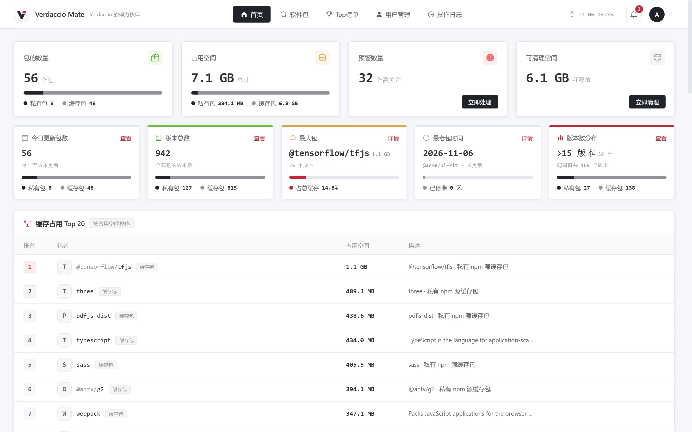
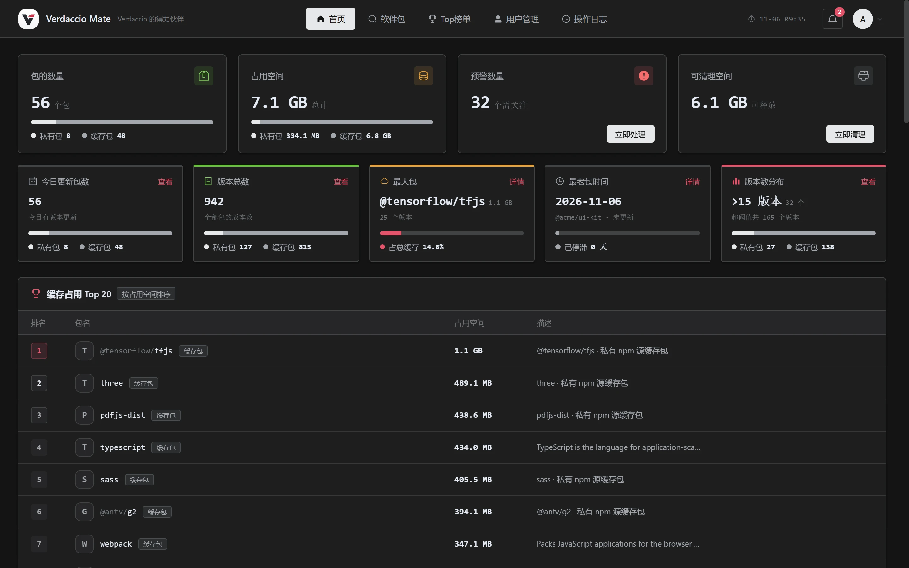
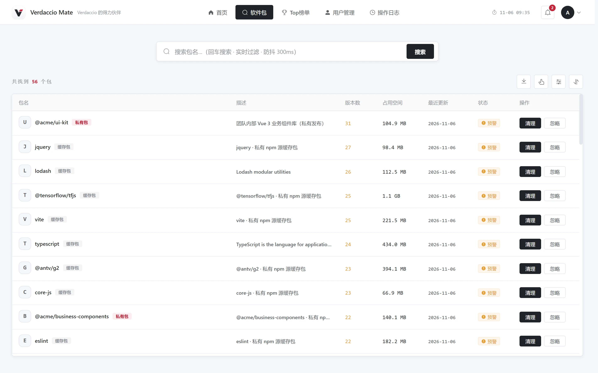
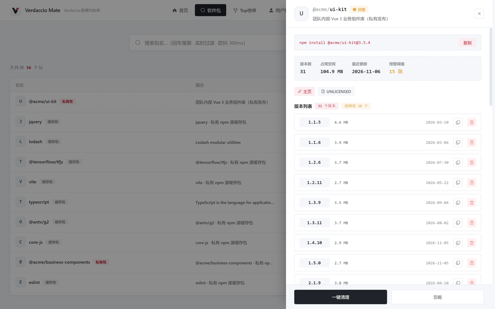
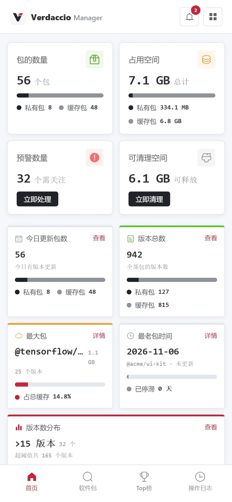
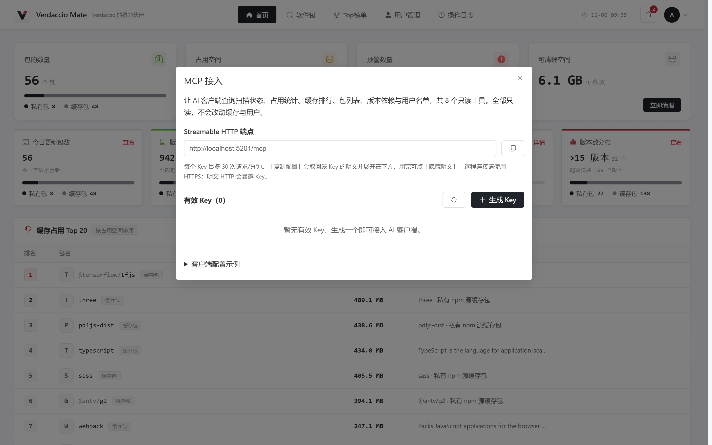

缓存目录是黑盒
解法：异步扫描存储目录，包数 / 版本数 / 占用 / 分布全部落到统计卡与 Top 20 排行。
原版 Verdaccio 只负责存取，不提供治理能力：缓存目录是黑盒，版本随安装无限膨胀，超量版本只能进目录手工删除， 私有包与代理缓存包混在一起分不清。Verdaccio Mate 直接挂载它的存储目录，把这些补齐成一套 Verdaccio Mate—— 扫描、识别、预警、清理、预置、审计，外加一个只读 MCP 端点让 AI 客户端也能查私服。

解法：异步扫描存储目录，包数 / 版本数 / 占用 / 分布全部落到统计卡与 Top 20 排行。
解法：全局阈值加单包例外，超量即预警，一键清理低版本、保留最新 N 版。
解法：清理走 Verdaccio Mate 原子操作，不受并发扫描影响，每次删除写入日志、按批次可追溯。
解法：每周抓取 npm Top1000 周榜，与本地缓存比对后一键预置热门依赖。
每项能力的数据口径、并发行为与边界都写在技术文档里，这里只回答「它做什么」。
异步扫描存储目录，增量复用上次结果，实时呈现进度。
私有发布包与上游代理缓存包分开标注、可筛选。
超过阈值置顶提示，快照去重后推送通知，单包可设例外。
一键保留最新 N 版，删除走原子操作并按批次留痕。
经原版 Verdaccio 代理逐包落盘，失败明细分开呈现。
每周定时抓取周榜，与本地缓存比对后一键预置。
README 渲染、逐版本大小与发布日期、安装命令一键复制。
输入即联想、多维筛选排序，虚拟滚动承载大目录。
全部操作统一审计，按批次号回查；预警进消息中心。
读写原版 Verdaccio 的 htpasswd，其用户可直接登录。
每日凌晨自动扫描、每周一抓取周榜，失败自动冷却。
8 个查询工具开放给 AI 客户端，详见 MCP 接入。
亮暗双主题、按日出日落自动切换，桌面平板手机一套代码。
亮色默认、暗色对齐 Element Plus 暗色变量，也可按部署地日出日落自动切换；桌面、平板、手机共用一套代码。

#E2556B


Verdaccio Mate 暴露一个 Streamable HTTP 端点 /mcp，用只读 Key 认证。一期开放 8 个查询工具，不提供删除、清理或改用户的能力。

cd frontend && npm install && npm run build，产物随后拷进镜像。docker build --platform linux/amd64 -t verdaccio-mate:latest .，NAS 上可直接 docker save 成 tar 导入。